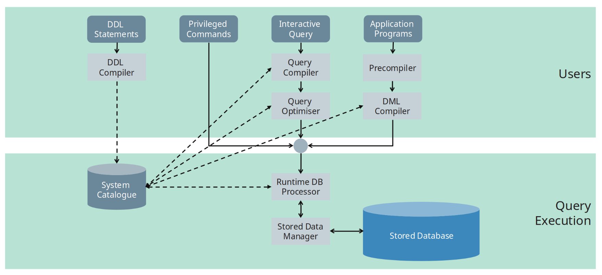

DBMS Architecture
These notes cover the internal architecture of a Database Management System (DBMS), focusing on: - How do we interact with a DBMS, - what components exist inside a DBMS to process queries and manage data.
Overview
Two fundamental questions guide DBMS architecture:
- What is the interface to the DBMS?
- What components exist inside a DBMS?
A DBMS acts as an intermediary between users/applications and stored data, providing abstraction, optimisation, and safe access.
DBMS Interfaces
DBMSs provide different interfaces depending on the task being performed.
DDL vs DML
Definition — DDL vs DML
DDL (Data Definition Language)
Used to define and modify the database schema.
- Creating tables
- Creating indexes
- Altering schemas
DML (Data Manipulation Language)
Used to query and modify data stored in tables.
- Querying data
- Inserting, updating, deleting records
High-Level DBMS Interfaces
A DBMS supports multiple types of users and interaction modes:
- Database Administrators Some DDL statements and potentially some privileged commands.
- Casual Users Interactively query using a command line.
- Application Programmers People who build database applications, these applications will require an interface for the database as well.
Core DBMS Components
At a high level, a DBMS consists of a frontend and a backend. - The frontend is user facing and is all about executing queries. - The backend is about actually executing the queries and also managing the data that exists behind the scenes.

The following sections describe each component.
System Catalogue
Definition — System Catalogue
The system catalogue (also called the data dictionary) stores metadata about the stored data and the database schema
It contains information such as:
- Names and sizes of files
- Storage details of files
- Names and data types of data items
- Mappings between schemas
- Constraints (e.g Foreign keys)
- Statistical information (e.g Number of distinct value on that field)
- Used in query optimiser
- It tells us how expensive certain operations are going to be.
The system catalogue is consulted heavily during query compilation and optimisation. Any query (DDL or DML) talks to the system catalogue. e.g. if a table exists, update queries will update system catalogue etc.
DDL Compiler
Role — DDL Compiler
The DDL compiler processes schema definitions and updates the system catalogue.
Responsibilities:
- Parses DDL statements
- Validates schema definitions
- Stores schema descriptions in the system catalogue
Query Compiler
Role — Query Compiler
The query compiler parses and validates queries, then converts them into an internal representation (query plans).
Responsibilities:
- Syntax and semantic checking of queries
- Compiling queries into an internal form (query plan)
- Passing compiled queries to the query optimiser (Consults system catalogue, of the possible algorithms, select the best algorithm for this operation)
Query Optimiser
Role — Query Optimiser
The query optimiser improves query execution efficiency by transforming the query plan.
Key tasks:
- Reordering and rearranging operations in the query plan
- Eliminating redundant operations
- Selecting appropriate algorithms
- Choosing suitable indexes
- Consulting the system catalogue for statistical information
- Generating executable code for the runtime processor
Note
Query optimisation is critical for performance and is one of the most complex components of a DBMS.
Precompiler
Role — Precompiler
The precompiler processes application programs that contain embedded DML commands.
Responsibilities:
- Extracts DML statements from application programs
- Sends extracted DML to the DML compiler
- Leaves host-language code unchanged
DML Compiler
Role — DML Compiler
The DML compiler compiles data manipulation commands into executable code.
Responsibilities:
- Compiling DML statements
- Producing code suitable for execution by the runtime database processor
Runtime Database Processor
Role — Runtime Database Processor
The runtime database processor executes database operations.
Responsibilities:
- Executing privileged commands
- Executing query plans produced by the query optimiser
- Accessing the database through the stored data manager
Stored Data Manager
Role — Stored Data Manager
The stored data manager controls access to data stored on disk.
Responsibilities:
- Managing access to disk using operating system services
- Controlling the shared buffer pool
- Handling data transfer between disk and main memory
Definition — Buffer Pool
The buffer pool is the portion of main memory used to cache database pages read from disk.
Stored Database
The stored database consists of:
- Data files on disk
- Indexes
- Physical storage structures
All access to the stored database is mediated by the stored data manager.
Other DBMS Utilities
In addition to core components, DBMSs include utility modules:
-
Loading utility
Loads files into the database -
Backup utility
Dumps the database to secondary storage (typically tape) -
Recovery utility
Handles failures using backup and recovery information -
File reorganisation utility
Reorganises files to improve performance -
Performance monitoring
Provides statistics to help the DBA decide when reorganisation is needed
Summary — Key Takeaways
- DBMS architecture separates interfaces, query processing, and data storage
- DDL defines structure; DML manipulates data
- The system catalogue stores critical metadata
- Query compilation and optimisation are distinct phases
- Runtime execution is separated from storage management
- Utilities support reliability, performance, and administration